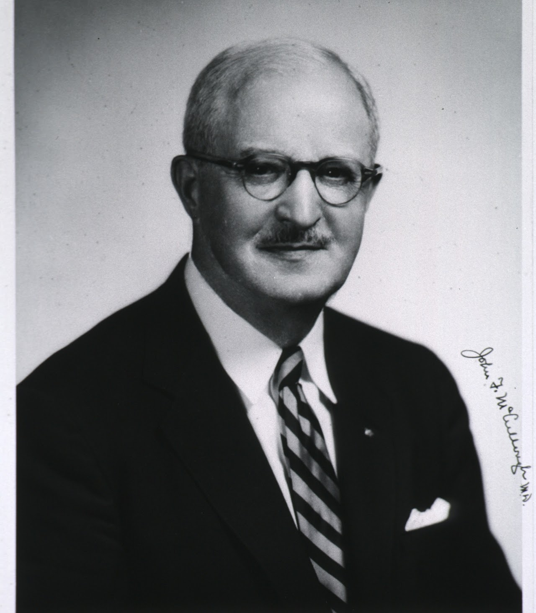

The Pittsburgh Roentgen Society is a local professional organization that exists to further radiology and advance patient care through radiology in the Pittsburgh area. The Society was founded by Dr. John F. McCullough on May 17, 1932 at the Schenley Hotel in Pittsburgh Pennsylvania. He and 20 other physicians from the Pittsburgh area were interested in the advancement of roentgenology (radiology) and corresponding with other similar professional organizations. The Pittsburgh Roentgen Society is thought to be the first of its kind in the United States. The Society works in cooperation with the American College of Radiology (ACR) and Pennsylvania Radiology Society (PRS) to advance radiology. Over time, the Pittsburgh Roentgen Society has become influential in establishing regulations and procedures beneficial to patients.
The main purpose of the Society is to promote education and scholarship. To that end, its members are provided with guest lectures, seminars, scientific sessions, films/cases, paper presentations and workshops. The Society meets once a month for an evening of lectures, presentations, review of films/cases, business meetings and dinner. Included in discussions are case studies, new procedures or materials, and review of current issues pertinent to radiology. Invited lecturers and activities are supported in part by a generous donation by the Hornick Fund and by membership dues. On a yearly basis, the society sponsors a Resident Challenge (Quiz Bowl) where a seasoned radiologist serves as a "Quizmaster", who prepares a series of cases and questions for residents. Awards are given to the best performing resident.
The society is a forum for economic and clinical problems that arise pertaining to radiology. In the early years of radiology and in conjunction with the ACR, the Pittsburgh Roentgen Society worked to make radiology an acceptable medical specialty in a time when many perceived radiologists as quasi-physicians. In the 1940s, the Society fought for the inclusion of radiological services in Group Hospitalization Plans. After winning, it worked with the United States Public Health Services (USPHS) to eliminate tuberculosis through the early detection by chest radiographs. In the 1960s and 1970s, the society worked to further solidify the specialty by working with the American Medical Association and the Blue Cross Agreement. In 1969 the Society established a career schematic for radiological technicians based on education and promotion descriptions. The following year, a statement of policy was issued to expand continuing education of radiologists and called for improved of quality of teaching in medical schools.

Copyright Univ. of Pittsburgh